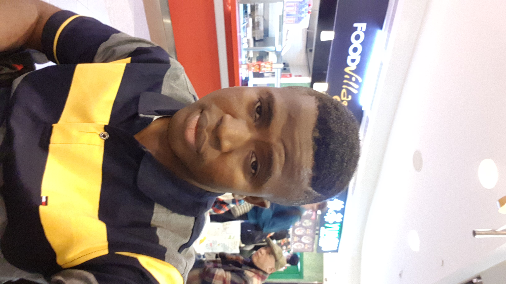

Background
I am Atilola Damilare Ezekiel from Nigeria. I`m studying Bsc computing Science at Griffith College Cork Campus. Ireland. I am the first born of my parents with 2 siblings behind me. I was born on the 2nd of November 1993. I went through pre-school, primary school, secondary and pre-tertiary institution. I speak English fluently and one other Nigerian language, Yoruba possibly. I am a Christian, A Redeemed Christian Church of God member precisely.I have a popular saying which is
"Believe in yourself, even if it`s not visible. you can make it"I`m aspiring to be a successful person in life and i`m putting all efforts to it. I believe with God I can and I will be successful
Facts
- I am a Nigerian, From the Western part to be precise
- I am an Intelligent being, who likes to know everything in his sorroundings
- I so much love Football and I support Chelsea Football Club
- I love listening to inspirational Music
- I love having Fun such as Hanging out with friends, going to the cinemas, Group shopping and so on.
Favourite Moviess
- Mr Beans by Rowan Sebastian Atkinson
- Fast and Furious by Gary Scott Thompson
- The gods must be crazy by Jamie Uys
- Coming to America by Eddie Murphy
- (Tai Chi Master) The Twins Warrior by Jet Li